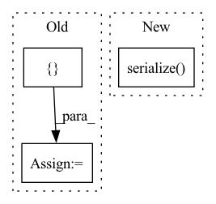

Pattern ID :25642
Before Change
// get files
dataset_path = os.path.join(data_path, dataset_props["data_folder"])
pattern_specs = []
root, dirs, files = next(os.walk(dataset_path))
if dataset_props["to_subfolders"]:
// https://stackoverflow.com/questions/800197/how-to-get-all-of-the-immediate-subdirectories-in-python
// cannot use os.scandir in python 2.7After Change
except KeyError:
pass
dataset_props.serialize( data_props_file)
// ------- Utils -------
def _init_sim_props(props, force_restart):In pattern: SUPERPATTERN
Frequency: 5
Non-data size: 3
Instances Fragment ID: 77899219
Project Name: maria-korosteleva/garment-pattern-estimation
Commit Name: 03a15a459850e75e462924f4a56f7f6e35fdfbf4
Time: 2020-04-19
Author: maria@korosteleva.com
File Name: data_generation/simulation/__init__.py
M Class Name: AnonimousClass
N Class Name: AnonimousClass
M Method Name: batch_sim(6)
N Method Name: batch_sim(5)
M Parent Class:
N Parent Class:
M File Name: data_generation/simulation/__init__.py
N File Name: data_generation/simulation/__init__.py
M Start Line: 65
M End Line: 95
N Start Line: 56
N End Line: 108
Before Change
jnp.ndarray, typing.Dict[str, jnp.ndarray]]:
ctx = Context()
ctx.parameter_dict = parameter_dict
loss = jnp.zeros([] )
for i in range(ctx.device_steps):
out, ctx.parameter_dict = train_step(ctx, data[i])
loss += out
return loss / ctx.device_steps, ctx.parameter_dict
After Change
wctx = WhileContext()
wctx.ctx.parameters = parameters
wctx.data = data
wctx = WhileContext(lax.while_loop(cond_fn, train_step, wctx.serialize() ))
return wctx.loss / wctx.ctx.device_steps, wctx.ctx.parameters
Fragment ID: 77899229
Project Name: homebrewnlp/olmax
Commit Name: e774807a946cb8ee17d5816b9272200b7c54df61
Time: 2021-07-19
Author: 39779310+ClashLuke@users.noreply.github.com
File Name: model.py
M Class Name: AnonimousClass
N Class Name: AnonimousClass
M Method Name: step(2)
N Method Name: step(2)
M Parent Class:
N Parent Class:
M File Name: model.py
N File Name: model.py
M Start Line: 129
M End Line: 135
N Start Line: 161
N End Line: 165
Before Change
result_json = self._get_metadata()
if with_display:
result_json["display"] = [ ("html", f"<p style="color:red">{self.exception}</p>")After Change
// TODO: not sure if the `with_display` parameter is needed
// add deprecation warning if it is not needed
return jsonpickle.dumps(
CheckFailureJsonSerializer(self).serialize() ,
unpicklable=False
)
Fragment ID: 77899230
Project Name: deepchecks/deepchecks
Commit Name: a5fcf3ee4a3a25908e587fc7d0458efd4eb7a30b
Time: 2022-05-04
Author: 71635444+yromanyshyn@users.noreply.github.com
File Name: deepchecks/core/check_result.py
M Class Name: CheckFailure
N Class Name: CheckFailure
M Method Name: to_json(2)
N Method Name: to_json(2)
M Parent Class:
N Parent Class:
M File Name: deepchecks/core/check_result.py
N File Name: deepchecks/core/check_result.py
M Start Line: 505
M End Line: 508
N Start Line: 473
N End Line: 473
Before Change
def single_file_sim(pattern_json_file, body_path, save_to):
try:
// ----- Init -----
options = {
"body": body_path,
"sim": {
"max_sim_steps": 1000,
"min_sim_steps": 10, // no need to check for static equilibrium until min_steps
"sim_fails": [],
"static_threshold": 0.05 // 0.01 // depends on the units used
},
"render": {
"body_color": [0.5, 0.5, 0.7],
"cloth_color": [0.8, 0.2, 0.2],
"floor_color": [0.8, 0.8, 0.8],
"resolution": [800, 800]
}
}
qw.load_plugin()
scene = mayasetup.Scene(options["body"], options["render"])
After Change
garment.clean()
// -------- Fin loop --------
print("Finished experiment")
props.serialize( garment.path + "/props.json")
except Exception as e:
print(e)
Fragment ID: 77899231
Project Name: maria-korosteleva/garment-pattern-estimation
Commit Name: 911e7bcff3c8851a0bda8a28b287a9d955b45590
Time: 2020-04-15
Author: maria@korosteleva.com
File Name: data_generation/simulation/__init__.py
M Class Name: AnonimousClass
N Class Name: AnonimousClass
M Method Name: single_file_sim(3)
N Method Name: single_file_sim(3)
M Parent Class:
N Parent Class:
M File Name: data_generation/simulation/__init__.py
N File Name: data_generation/simulation/__init__.py
M Start Line: 28
M End Line: 65
N Start Line: 32
N End Line: 76